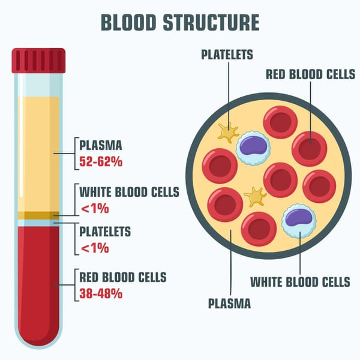
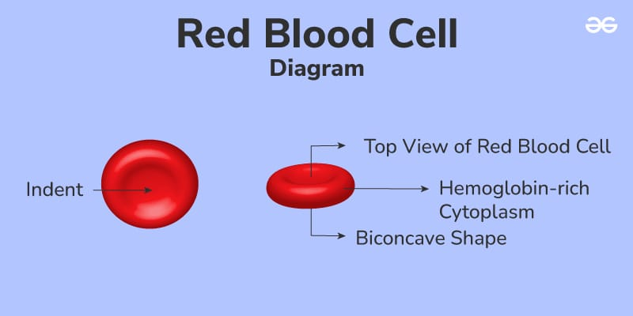
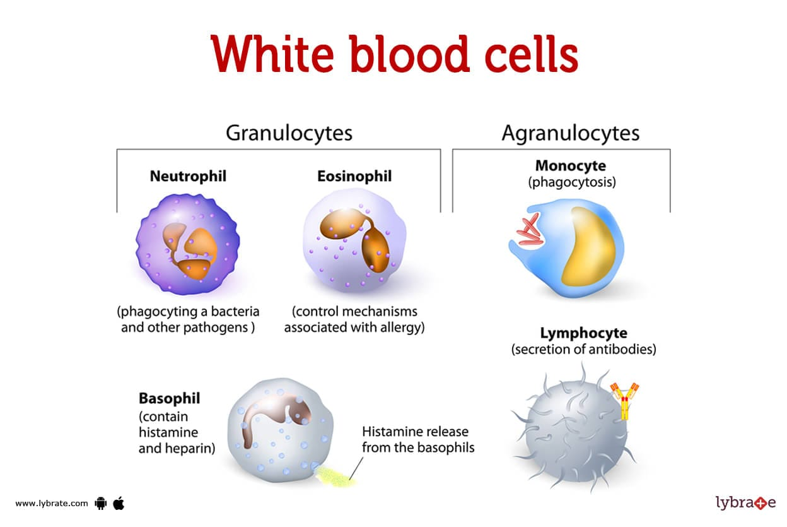
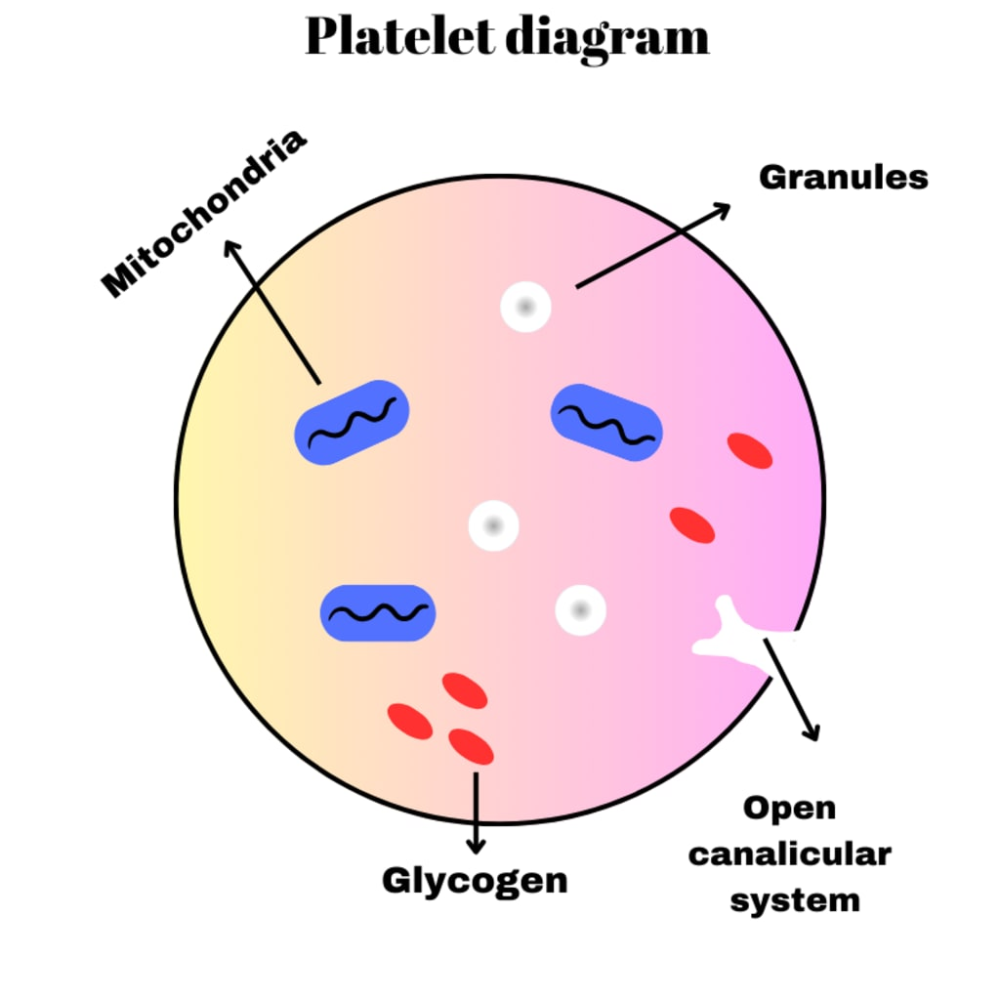
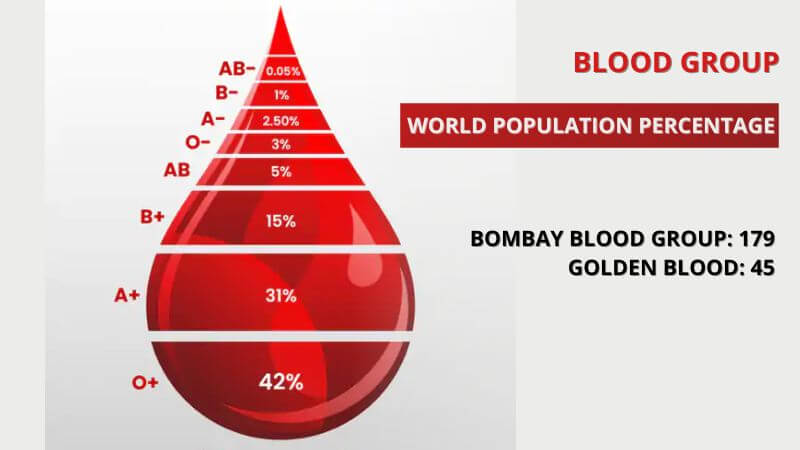
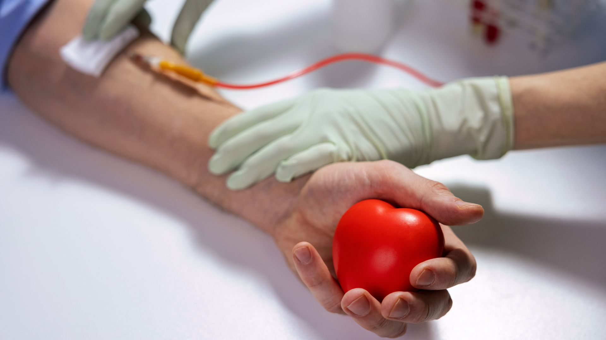

History of Blood
The history of blood is a fascinating journey through medical discovery and understanding. Here's an overview:
Ancient Times
-
Early Understanding: Ancient Egyptians believed blood was essential for life and performed bloodletting for therapeutic purposes.
Greek Contributions: Hippocrates and Aristotle theorized that blood was one of the four bodily humors influencing human health and temperament.
Middle Ages to Renaissance
Bloodletting Practices: Medieval physicians widely practiced bloodletting, believing it could balance bodily humors and treat various ailments.
William Harvey (1628): Published "De Motu Cordis," demonstrating the circulation of blood and the role of the heart as a pump.
17th to 19th Century
Microscopy and Blood Cells: Anton van Leeuwenhoek's use of the microscope in the 17th century revealed blood cells.
Discovery of Blood Types: Karl Landsteiner identified blood groups (A, B, AB, O) in 1901, which was crucial for safe blood transfusions.
20th Century
Blood Transfusions: Became safer and more common after understanding blood types and the development of anticoagulants.
Blood Banking: Established during World War II, allowing for the collection, storage, and distribution of blood.
Modern Era
Advancements: Ongoing research in hematology has led to advanced treatments for blood disorders, improved blood storage techniques, and the development of artificial blood products.
Key Milestones
1628: William Harvey's discovery of blood circulation.
1901: Karl Landsteiner's identification of blood types.
1937: Establishment of the first blood bank in Chicago.
1940s: Advances in blood storage during World War II.
1970s-Present: Development of synthetic blood and genetic research in hematology.
The understanding of blood has evolved from ancient misconceptions to sophisticated modern medical practices, revolutionizing healthcare and saving countless lives.
STRUCTURE OF BLOOD
The structure of blood is complex, consisting of various cellular components suspended in a liquid matrix called plasma. Here's a detailed breakdown of the structure of blood:
1. Plasma
Composition: Plasma is the liquid component of blood, making up about 55% of its volume. It is primarily composed of water (about 90-92%), but also contains proteins, electrolytes, nutrients, hormones, and waste products.
Functions:
Transport: Plasma carries nutrients, hormones, and proteins to the parts of the body that need it.
Waste Removal: It helps in the removal of waste products by transporting them to the kidneys, liver, and lungs for excretion.
Clotting: Plasma contains clotting factors that are essential for blood coagulation.
2. Formed Elements
The remaining 45% of blood consists of the formed elements, which include red blood cells, white blood cells, and platelets.
A. Red Blood Cells (RBCs)
Also Known As: Erythrocytes
Structure:
Shape: Biconcave discs that are flexible and can easily pass through the capillaries.
Lack of Nucleus: Mature RBCs do not have a nucleus, which allows more space for hemoglobin.
Hemoglobin: RBCs contain hemoglobin, a protein that binds oxygen and carbon dioxide for transport.
Function:
Oxygen Transport: RBCs carry oxygen from the lungs to the tissues.
Carbon Dioxide Transport: They transport carbon dioxide from the tissues back to the lungs for exhalation.
B. White Blood Cells (WBCs)
Also Known As: Leukocytes
Types:
Granulocytes: Neutrophils, Eosinophils, Basophils
Agranulocytes: Lymphocytes, Monocytes
Functions:
Immune Response: WBCs are involved in protecting the body against infections and foreign invaders.
Inflammation: They play a role in the inflammatory response.
Phagocytosis: Some WBCs can engulf and digest pathogens and debris.
C. Platelets
Also Known As: Thrombocytes
Structure:
Fragments: Platelets are small, cell fragments derived from larger cells called megakaryocytes in the bone marrow.
Function:
Clotting: Platelets are essential for blood clotting. They adhere to the site of a blood vessel injury, form a temporary plug, and release chemicals that activate the clotting cascade.
Blood Groups
Blood groups refer to classifications of blood based on the presence or absence of certain antigens on the surface of red blood cells and antibodies in the plasma. The two main systems used for blood grouping are the ABO system and the Rh factor system.
1.ABO Blood Group System:
Determines blood type based on the presence of A and B antigens on red blood cells.
Types: A, B, AB (both A and B antigens), and O (neither A nor B antigens).
Determines compatibility for blood transfusions.
2.Rh Factor System:
Determines the presence (+) or absence (-) of the Rh antigen (D antigen) on red blood cells.
Types: Rh-positive (+) and Rh-negative (-).
Important in pregnancy (Rh incompatibility can affect pregnancies).
3.Other Blood Group Systems:
Include additional antigens like Kell, Duffy, Kidd, and others.
Less commonly used but important for specific medical conditions and transfusion needs.
4.Importance:
Crucial for safe blood transfusions and organ transplants.
Determines compatibility between donors and recipients to prevent adverse reactions.
5.Rare Blood Types:
Such as Bombay blood group (lacks A, B, and H antigens) and Rh-null (lacks all Rh antigens).
Require specialized matching for transfusions due to their rarity.
Understanding blood groups is essential in medical practice for ensuring safe and effective blood transfusions and treatments.
Blood disorders
Disorders and diseases of the blood can impair the many functions that blood performs. Some common blood disorders are:
Anemia:This happens when low red blood cell or hemoglobin levelsTrusted Source mean the cells do not transport oxygen effectively, leading to fatigue, pale skin, and other symptoms.
Blood clotting:Clotting helps wounds and injuries heal, but blood clots that form inside a blood vessel can create a blockage, which can be life threatening. If clots become dislodged and move through the heart to the lungs, a pulmonary embolism can form.
Blood cancers:Cancers such as leukemia, myeloma, and lymphoma occur when blood cells start to divide uncontrollably without dying off at the end of their life cycle.
Hemophilia:If a person has low levels of clotting factors in the blood, they can bruise or bleedTrusted Source very easily. They may bleed for too long after a minor injury or surgery, or during menstruation. It affects around 18,000 peopleTrusted Source in the U.S.
Thalassemia: This is also a type of inherited anemia in which the body produces an unusual form of hemoglobin. It affected around 1,000Trusted Source people in the U.S. in 2008 and is most common in people from around the Mediterranean and parts of Asia. If symptoms suggest a person may have a blood disorder, they should seek medical advice. A doctor may refer them to a specialist in blood disorders, known as a hematologist.
Advantages & disadvantages of donating blood
Advantages of Donating Blood
Donating blood can help people with many health conditions, such as those who:
have internal or external bleeding due to an injury
have sickle cell disease or another illness that affects the blood
are undergoing surgery, such as cardiovascular or orthopedic surgery
have an inherited blood disorder
need treatments involving plasma or other blood products
are undergoing a transplant
The remaining 45% of blood mainly consists of red and white blood cells and platelets. Each of these has a vital role to play in keeping the blood functioning effectively.
Disdvantages of Donating Blood
Donating blood is safe, as long as the center follows the standard guidelines.The U.S. and many other countries have strict regulations to ensure safety. The FDA and American Association of Blood Banks (AABB) monitor blood banks for this purpose. Safety precautions they take include:
screening donors for existing health conditions
using new needles for each donation
having professional staff on hand
providing monitoring and refreshments to ensure a safe recovery